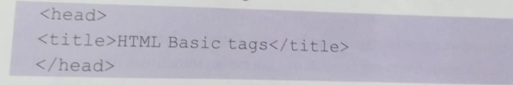
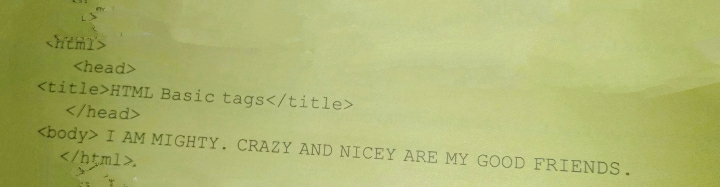
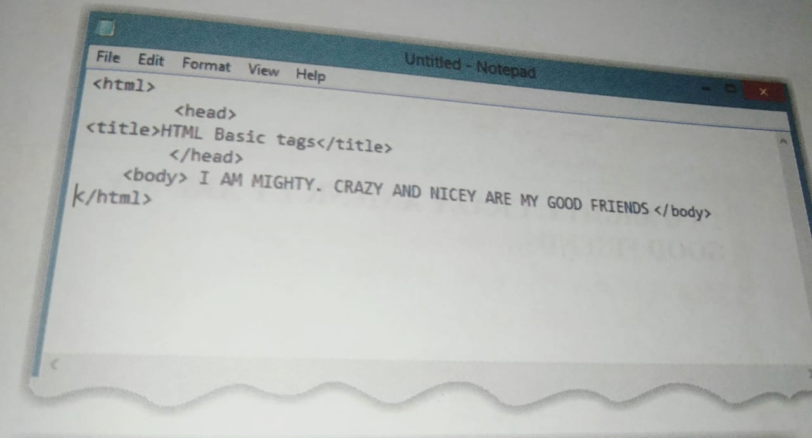
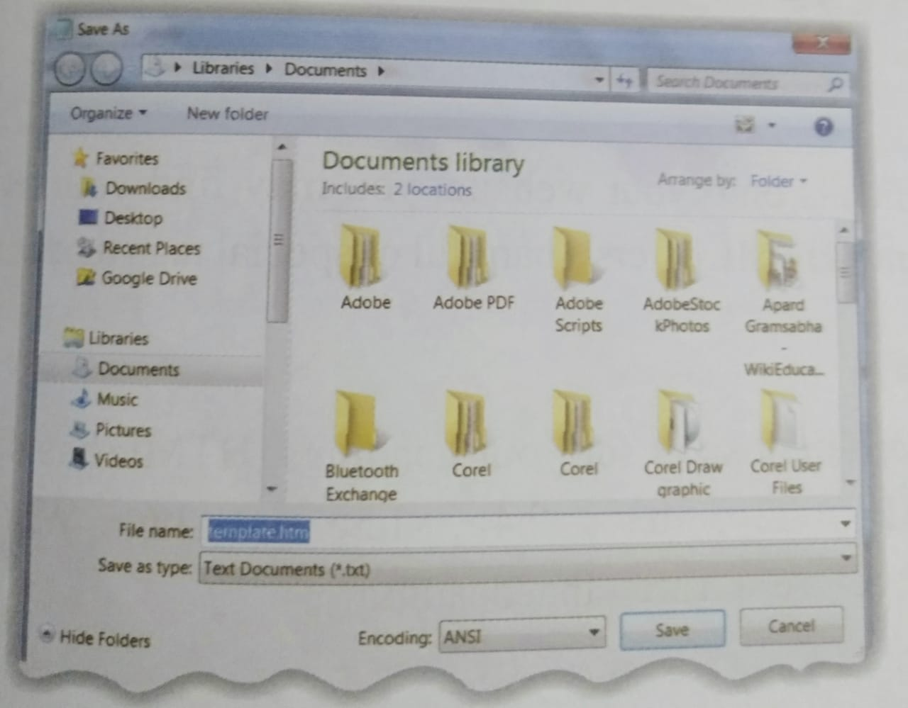
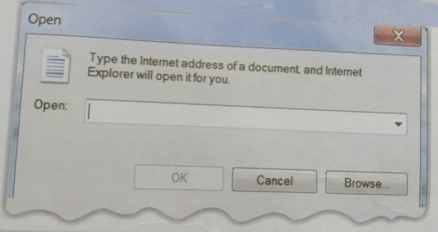
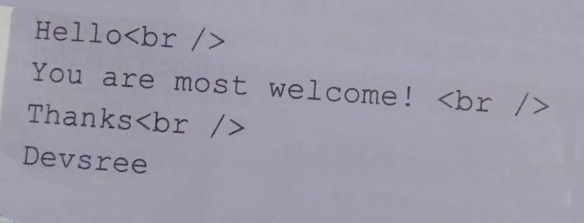

Html:A Programing Language
Click here to Know What is Html

Html is a Programing language. Html stands for Hypertext Markup Language. Hypertext refers to the way in which webpages (Html documents) are linked together. When you click a link in a webpages, you are using a hypertext. A Markup Language describes how HTML works because they describe about the layout of a webpage.
HTML DOCUMENT STRUCTURE
An HTML doucment starts and end with html and /html tags.These tags tell the broswer that the entire doucment is composed in HTML.Inside these two tags, the doucment is spilt into two sections:
* The head and /head elements,which contain information about the doucment such as the tittle of the doucment, the author of a doucment and other such information. Information inside this tag does not display outside.
* The body and /body elements, contains all the content of the doucment that you see on your screen.
HTML TAGS AND ELEMENTS
HTML is a markup language and we use many tags to markup text. html,head and body are called HTML tags or HTML elements. Every tag consits of a tag name, sometimes followed by an optional list of tag attbutes, all placed between operning and closing brackets. The tag is a coded command appropriately enclosed in brakets, such as head. More complicated tags contain one or more attributes, which specify or modify the behaviour of the tag. HTML has two types of tags:
(a) Empty TAGS- These tags only require an opening and need not be closed eg:br,hr etc.
(b) Container TAGS- These tags need to be opened and closed also. For eg:B,I etc.
Html Basic Tags
The basic structure for all HTML doucments is simple and should include the following minimum elements or tags:
* Html- The main container for HTML pages.
* Head- The container for page header information.
* Tittle- The tittle of the page.
* Body- The main body of the page.
The HTML Tag
The Html elements is the containing element for the whole HTML doucment. It recognizes the doucment as a HTML doucment.
Following two elements appear as direct successors of an html element:
* Head
* Body
As such, start and end HTML tags enclose all the other HTML tags you use to describe a webpage.
The Head Element
The head element is a container for all other header elements which will provide information about the document. It should be the frist thing to appear after the opening html tag.
The title Element
Each head element should contain a tittle element indicating the tittle of the document, although it may also contain any combination of the elements, in any order.
You should specify a tittle for every page that you write inside the tittle element. This element is a child of the head element. It is used in several ways:
* It displays at the top of a broswer window.
* It is used as the default name for a bookmark in broswers such as Internet Explorer and Netscape.
* It is used by search engines that use its content to help index pages.
Example:
Here is an example of the tittle tag.

CREATING HTML DOCUMENT
Creating an HTML document is easy. To begin coding HTML, you need only two things:a simple text editor and a web broswer. Notepad is the most basic of simple-text editors and you can write HTML code of any length.
Open Notepad or another text editor. Type the following program:


Now do the following steps to save and open the program in Internet explorer.
* In the file menu, choose Save As.
* In the Save as (Types) option box, choose All Files.
* Name the file template.html.
* Click Save.
* Open Internet Explorer.


* Click the File menu and select the Open option.
* An Open dialog box appears. Click Browse.


* The Window Internet Explorer dialog box opens up.Select your file template.
* Click OK in the Open dialog box.

* The HTML file will open in Internet Explorer.

HTML FORMATTING Tags
A you begin to place more and more text elements onto your website, you may find yourself wanting to incorporate effects in your text elements. HTML offers a handful of special tags that can be utillized to format the text as desired.
Create Headings - The hn ELEMENTS
Any document starts with a headings. You use different sizes for your headings. HTML has six levels of headings, which use the elements h1,h2,h3,h4,h5 and h6. While displaying any heading, the broswer adds one line before and after that heading. Example:

This will display the following result:


Create Paragraph- The p Element
The p element offers a way to format your text. The text of each paragraph should go in between an opening p and closing /p tag as shown below in the example. p Here is a paragraph of text /p. Example:

This will produce the following result:


Create Line Breaks- The br Element
Whenever you use the br element, anything following it starts on the next line. This tag is an example of an empty element, where you do not need closing of the tags. Example:

Quick Action
Example:

The center Element
You can use the center tag to put any content at the center of the page or any table cell. Example:

HTML PRESENTATION TAG
If you use a word processor, you are familiar with the ability to mark text bold, itlaic, or underlined. These are just three of the ten options available to indicate how text can appear in HTML and XML.
Bold Text- The b Element
a b and /b This tag makes the text written within it as BOLD. Example:

Italic Text- The i element
Anything that appears in the i and /i element is displayed in displayed in itlaic, like the word itlaic here. Example:

Underline Text- The u Element
Anything that appears in the u and /u element is displayed with underline, like the word underlined here. Example: